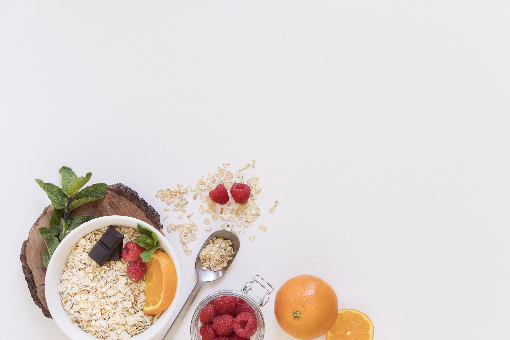

Breakfast oats
Serves 1
- Ingredients:
- 1/2 cup oats
- 1/3 cup plain greek yoghurt
- 1/3 cup fresh or frozen berries
- 2/3 cup plant milk
- 1 tsp of hempseeds or chia seeds
- Add 1/2 cup of oats into a bowl or container.
- In a blender add in 1/3 cup of berries, 1/3 cup plain greek yoghurt and 2/3 cup plant milk of your choice.
- Blend until smooth and mix it with the oats.
- Sprinkle on the hempseeds or chia seeds.
- Refrigerate overnight and enjoy in the morning.